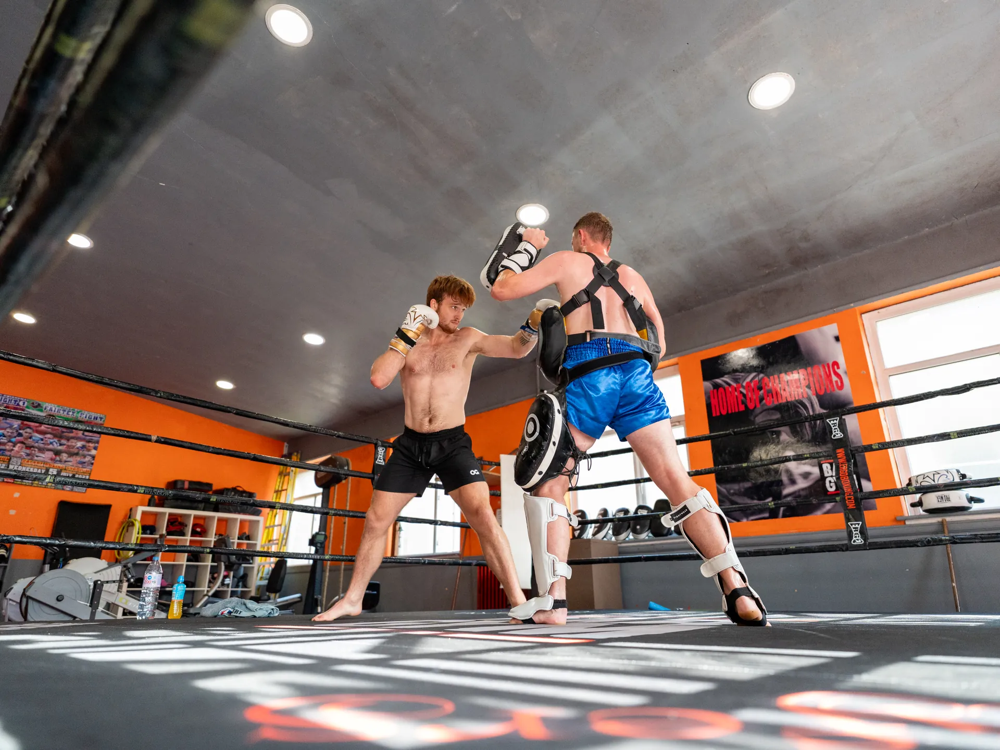
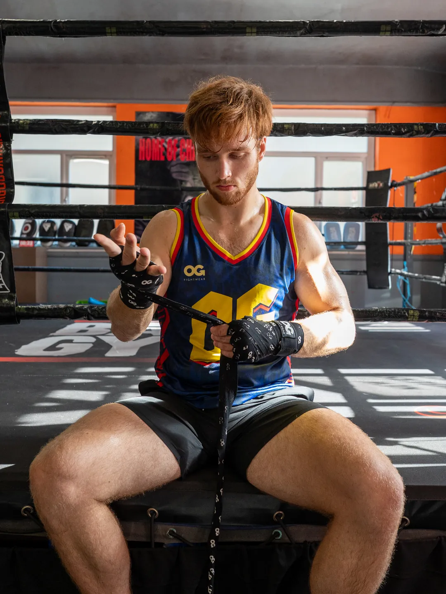
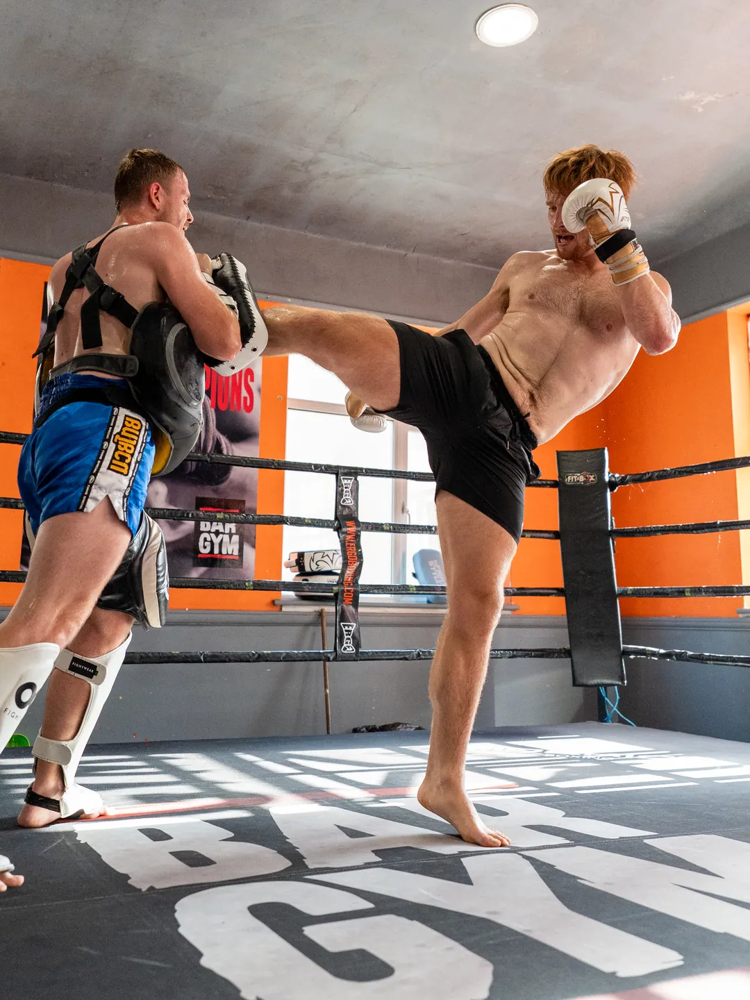
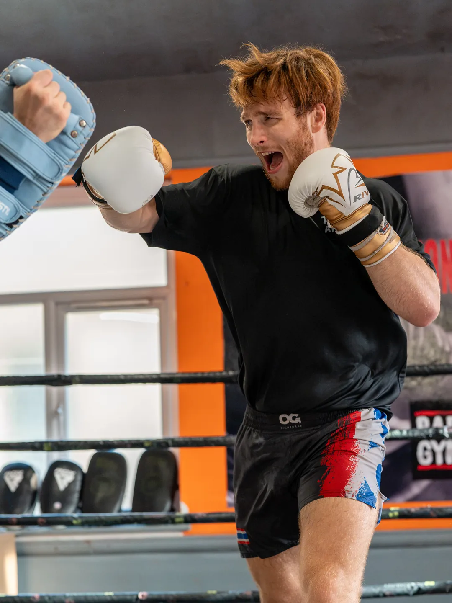
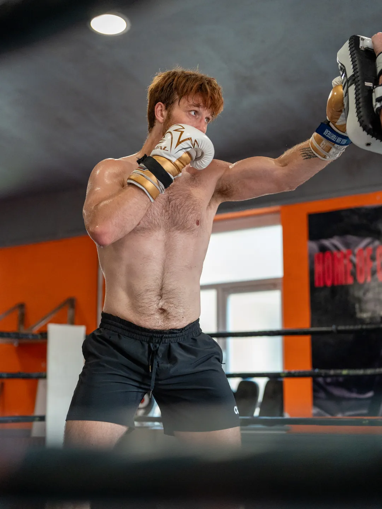
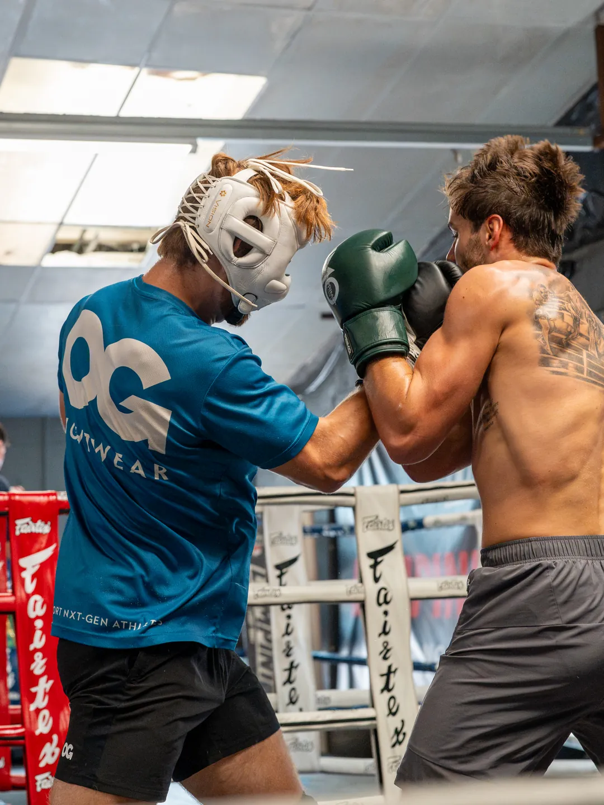
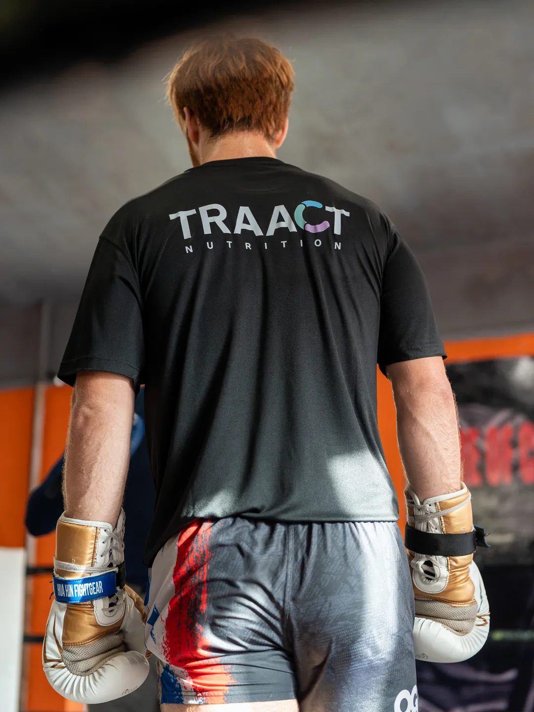

Featured project · Muay Thai
Muay Thai Tom.
A pre-fight story with Tomasz Utczinski, ahead of the fight that made him WBC Muay Thai heavyweight world champion.
01 · Pre-fight mini doc
The road to a WBC world title
Before his world title fight against Gerardo Atti, we sat down with Tomasz to tell the story of how he got there.
The brief
Tomasz had a WBC world title fight coming up on 12 September against Gerardo Atti, who had beaten him before. In the build-up we wanted to get a piece out that showed people who Tomasz is, not just when he's fighting.
What we made
We interviewed Tomasz about his journey: taking up Muay Thai during COVID, losing his first fight, getting knocked out by Tom Watson and then beating him in the rematch, and the team in his corner, his coach Reece and his manager Sam.
Alongside the interview we filmed training B-roll, from pad work to sparring, and cut it together with footage from his earlier fights into a short storytelling piece.
The result
On 12 September Tomasz beat Atti by unanimous decision at Hungryside Super Show 3 in East Kilbride to become the WBC Muay Thai heavyweight world champion.
In the gym
Photos from his training sessions: wraps, pad work and sparring.





